I-14 没有哪部名作的声音是差的
原标题：No Masterpiece Has Bad Audio
▶ 原视频：https://youtu.be/5fqTlWgfCL0本集日语字幕轨暂时无法获取（限流），内容据画面内烧录的英文字幕 OCR 整理，时间点按画面字幕对齐。
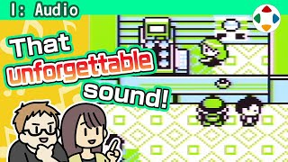
速览
「如果允许我发表个人意见的话……」其实这个频道上的一切都是他的意见，所以应该没问题！作为体验过大量游戏的人，他相信：没有哪部名作的声音是差的；玩的游戏越多，就越确信这点。当然，很久以前有些游戏完全没有声音（如《Rogue》），这些例外放一边；他认为即使是只有简单噪声效果音的作品（《打砖块》《太空侵略者》《小行星》），声音也构建得很好。世上有画面差却是名作的游戏，也有缺乏连贯的游戏本质却成了名作的；但他想不出一个声音设计差的名作。当然，「声音」包括音乐和效果音。和游戏本身一样，玩家对音乐和效果音也有好恶，所以不可能断言某个声音作品做得好或不好。但请回想一下：《勇者斗恶龙 III》《时之笛》《地牢主人》《太空哈利》《逆转裁判》《宝可梦 红》《超级马力欧世界》……最先浮现在脑中的，往往不是音乐和效果音吗？比游戏本身、画面、角色更甚，声音直击心灵，所以绝不能轻视——没有声音差的名作！当然，可以说手机游戏是例外；静音玩的掌机游戏也一样；也可能周围环境让人难以听清游戏声音，却依然玩得开心。但如果能无拘束地听，而声音又好，他敢打赌这会让你对游戏的享受更上一层。那么告诉他：你心中的名作，声音好吗？
1. 个人意见 0:04
「如果允许我发表个人意见的话……」其实这个频道上的一切都是他的意见，所以应该没问题！
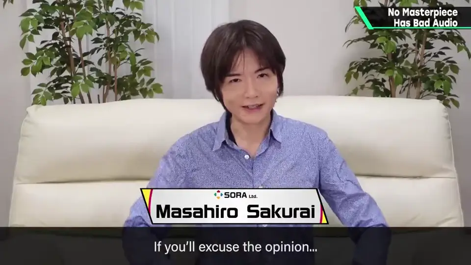
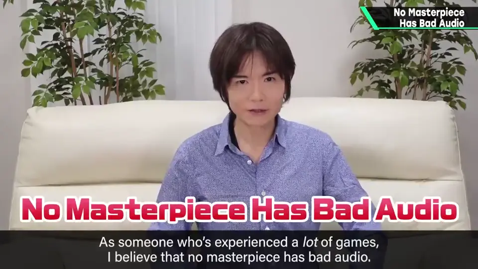
2. 例外与简单的声音 0:24
当然，很久以前有些游戏完全没有声音，这些例外放一边。
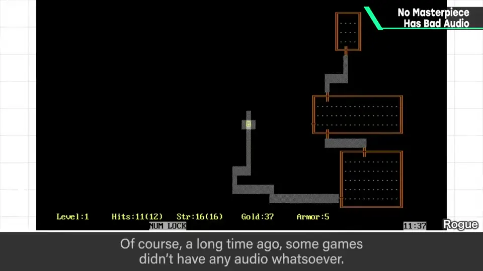
即使只有简单噪声效果音的作品，声音也构建得很好。
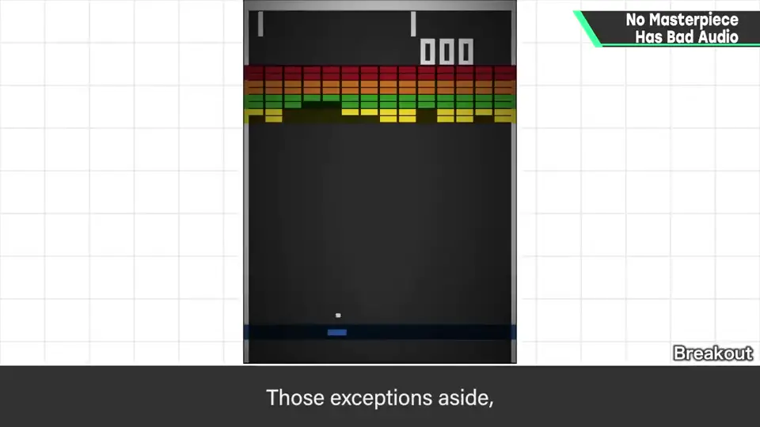
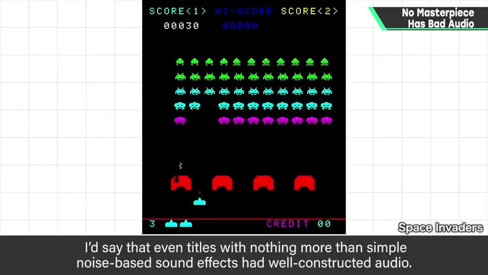
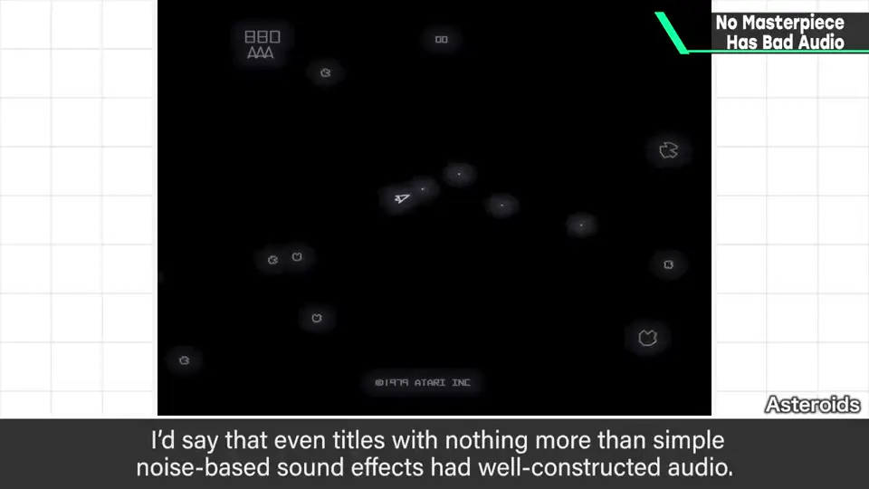
3. 画面与本质 vs 声音 0:43
世上有画面差却是名作的游戏，也有缺乏连贯的游戏本质却成了名作的。
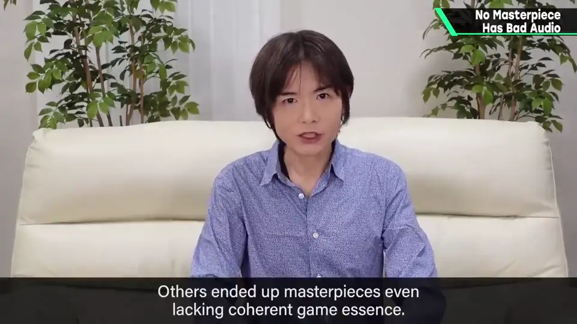
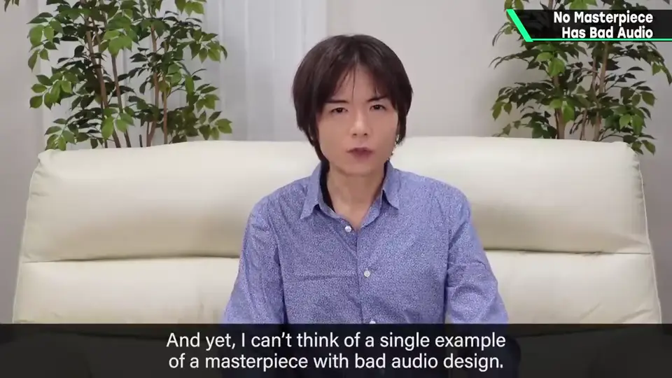
4. 「声音」包括什么 0:59
当然，「声音」包括音乐和效果音。
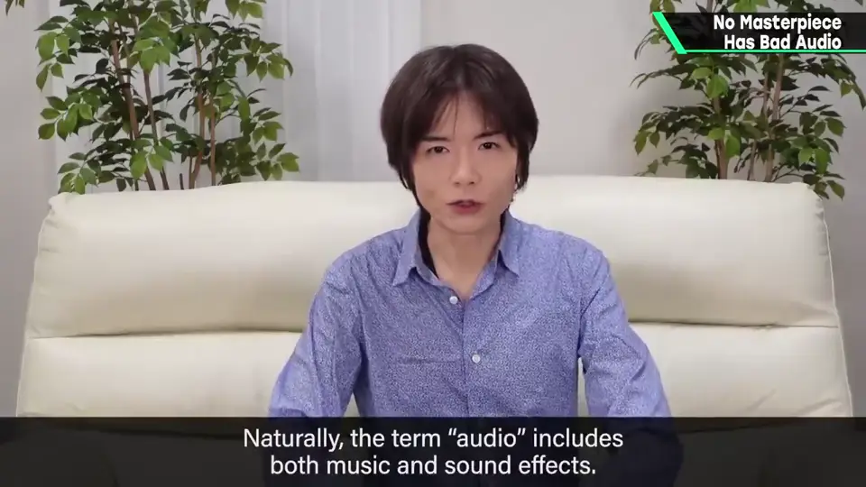
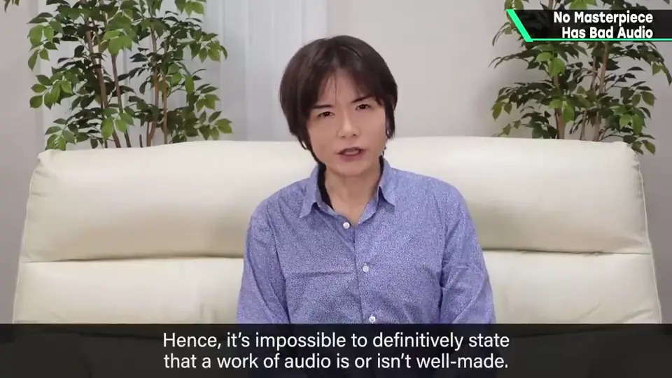
和游戏本身一样，玩家对音乐和效果音也有好恶，所以不可能断言某个声音作品做得好或不好。
5. 回想名作 1:15
但请回想一下：
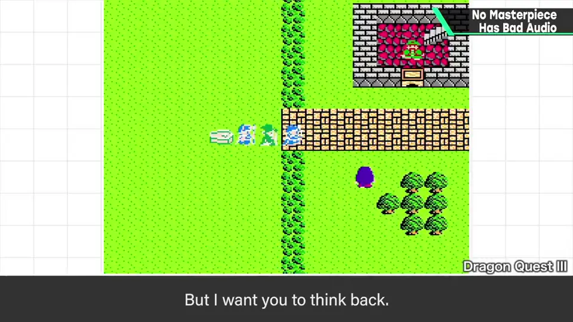
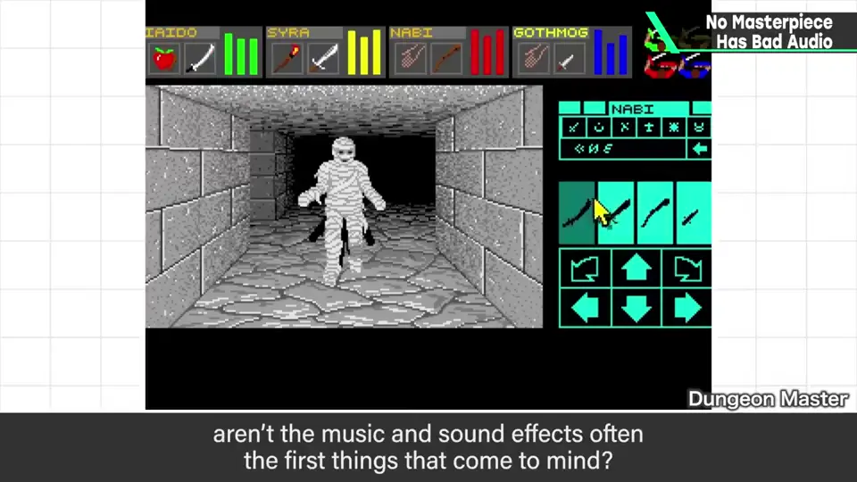
最先浮现在脑中的，往往不是音乐和效果音吗？
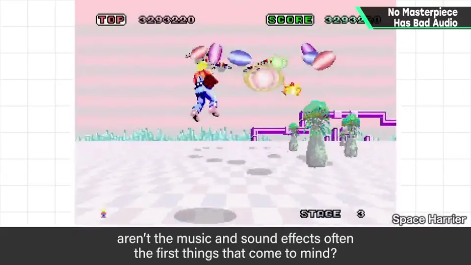
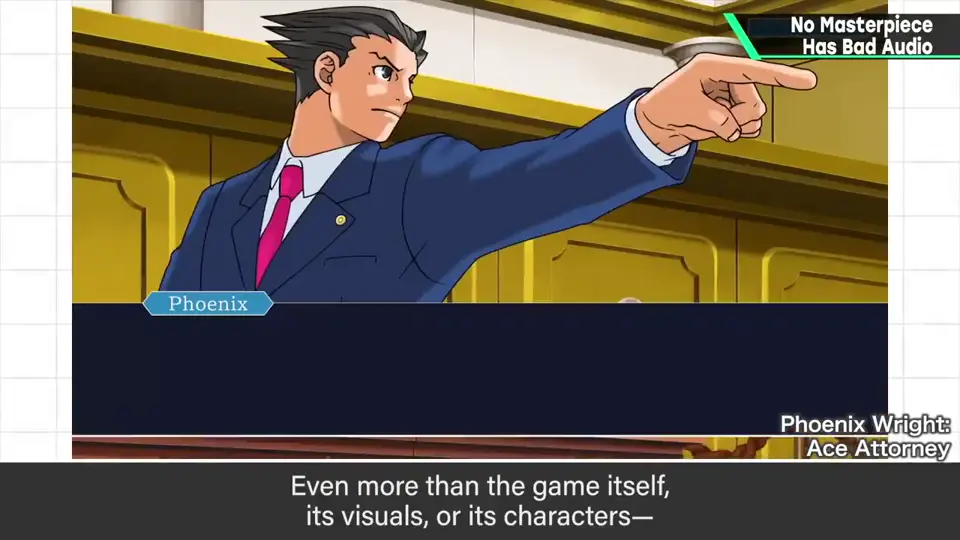
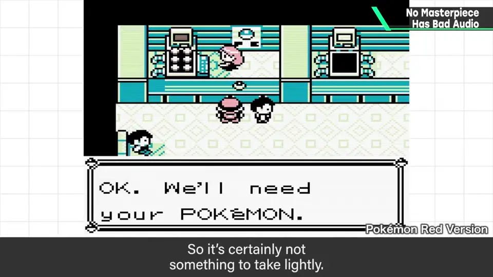
6. 例外与结论 1:50
当然，可以说手机游戏是例外；静音玩的掌机游戏也一样；也可能周围环境让人难以听清，却依然玩得开心。
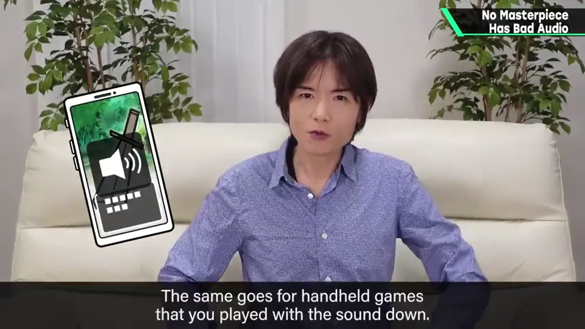
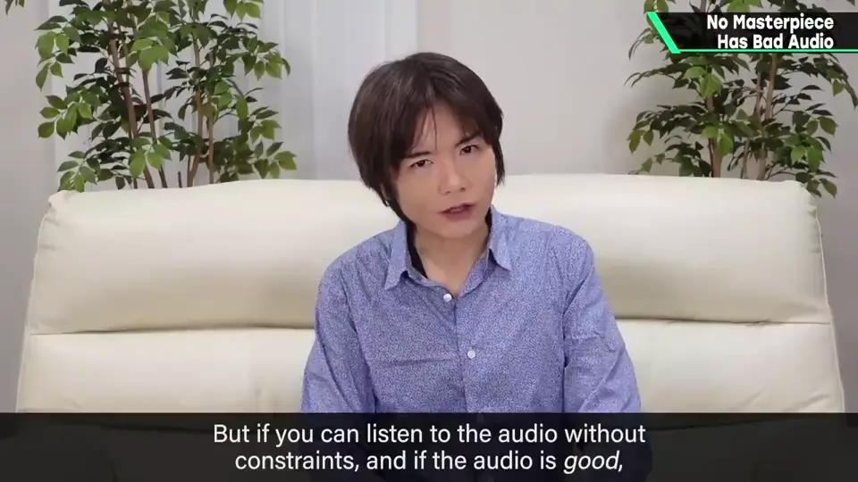
但如果能无拘束地听，而声音又好，他敢打赌这会让你对游戏的享受更上一层。
那么告诉我：你心中的名作，声音好吗？
自测题
1. 樱井的结论是什么？
没有哪部名作的声音是差的。 0:18
2. 「画面差的名作」与「声音差的名作」有何区别？
前者存在，后者他一个也想不到。 0:54
3. 这个规则有哪些例外情况？
很早期完全无声的游戏；手游、静音玩的掌机、环境嘈杂时。 1:52